Hole edits
When you place a hole, an Edit Definition handle attaches to the feature so that you can change dimension values for existing holes. To change the dimension value, click the hole dimension,
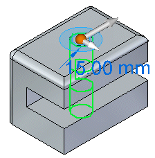
type a new value, and press Enter.
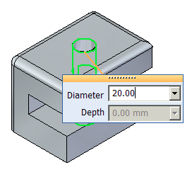
The dimension changes to reflect the new value.
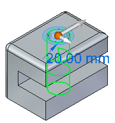
You can click the Options button on the command bar to display the Holes Options dialog box if you want to change the hole type.
After placing a hole, you can add additional occurrences of the hole. To add more hole occurrences, click the dimension for the hole (1), click the More Holes button
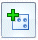
, drag the cursor to the new location (2), and click to place the new occurrence of the hole (3).
Creating a through all hole on a c-shaped model creates a from-to extent from the top plane (A) to the bottom plane (B).
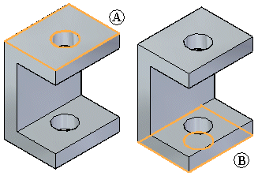
Suppose you create a protrusion below the face,
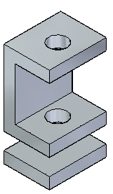
or a protrusion between the two faces.
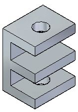
If you edit the dimension of the hole,
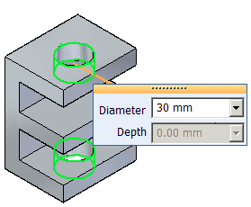
the hole dimension is updated, but the hole does not pass through the new faces.
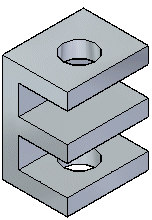
Also, if you change the hole type, the change is applied only to the existing faces. The new faces remain unchanged.
In the following example, two 100 mm finite depth holes are placed as a group in a block.
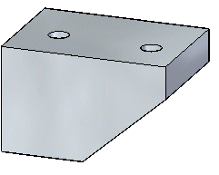
The hole on the left does not penetrate the entire depth of the block and is capped.
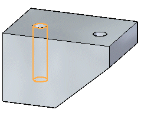
If you select the handle of the hole on the left, you can change the depth and diameter for the hole.
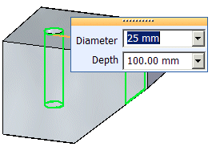
Also notice that the hole type on the command bar is set to Finite depth.
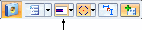
The hole on the right penetrates the entire depth of the block and is not capped. Because it is not capped the hole extent for the hole is changed from Finite depth to Through Next depth.
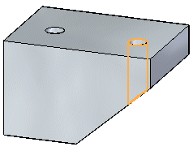
If you select the handle of the hole on the right, you can change the diameter of the hole, but not the depth of the hole.
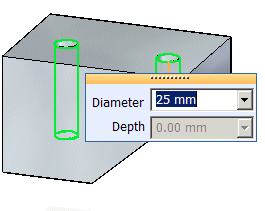
Also notice that the hole type on the command bar is set to Through Next.
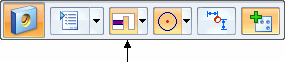
Suppose you select the highlighted face (A) and drag it to a new position (B).
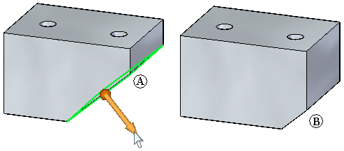
If you select the hole on the right for edit, it remains a from-to hole and is not capped.
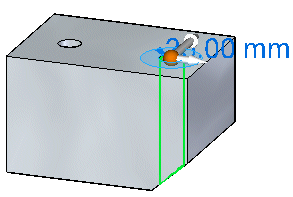
If you change the diameter for the hole, the diameter changes, but the hole type remains From-To.
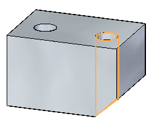
If you change the hole type to Finite, the hole depth changes to the original depth of 100 mm.
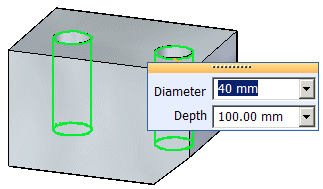
If you change the depth of the hole, the depth for both holes in the group changes.
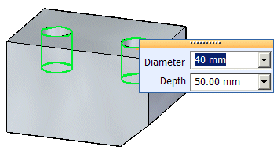